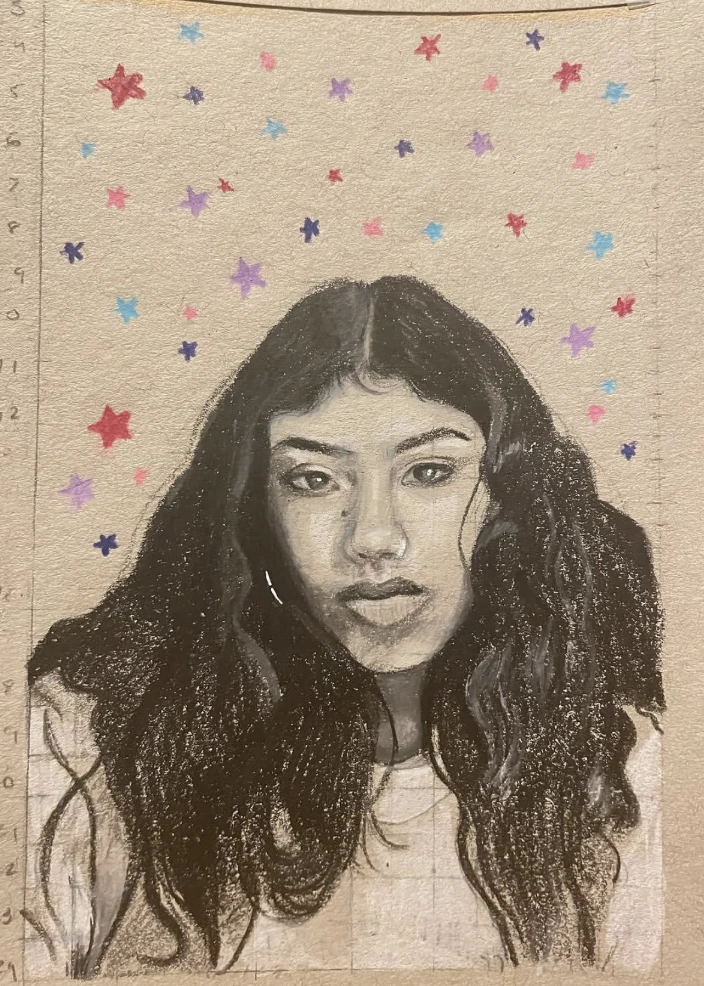

POEM + PAINTING / 01
My Dad Smokes Weed
“but he’s still an indian father”
ARTIST · WRITER · HENNA · JEWELRY · MUSIC
Painting, poetry, henna, jewelry, and music — a portfolio across mediums.
Select the artwork to look closer
02 / PAINTING · DIGITAL ART · JEWELRY · SPARKBUGS · CROCHET
Handmade beaded lighter holders
WORDS / NALINI KANTHETI
03 / POETRY & PAINTING
“but he’s still an indian father”

“i learn to stomp on the eggshells i used to tiptoe around”

06 / A CLOSING POEM
“i did away with swords and armor
and instead equipped pills and bottles
and maybe i’ll never be a real hero
but im far from done fighting battles”
KANTHETI DESIGNS / HENNA
MUSIC / VIDEO
FEATURED / MUSIC VIDEO

NALINI KANTHETI
Creating art has always felt less like a conscious decision and more like an inevitability. Ever since I could pick up a pencil or a henna cone, I've found myself naturally gravitating toward artistic expression. As a multidisciplinary artist, I explore this instinct through acrylic painting, digital illustration, henna, beadwork, creative writing, poetry, and freestyle rap.
For me, art is an immersive experience. I often enter a state of intense concentration, losing myself in the process of observation, experimentation, and refinement. Whether I'm perfecting the highlights of a painting, arranging intricate beadwork, or improvising clever wordplay, I find fulfillment in the technical details of creation. My work is not always driven by a predetermined message; sometimes, the simple pursuit of beauty, craftsmanship, and creativity is enough.
My Indian heritage is deeply intertwined with my artistic identity, influencing both the aesthetics of my visual work and the narratives I choose to tell. Through storytelling, I explore themes of cultural expectations, identity, and representation, often weaving deeper social commentary into engaging and accessible narratives.
Above all, I create to bring people joy. I want my work to entertain, inspire curiosity, and invite audiences into imaginative worlds they might not otherwise encounter. Whether through whimsy, humor, visual beauty, or storytelling, I hope to leave people with an experience that is both meaningful and enjoyable.
kanthetidesigns@gmail.com ↗05 / COMMISSIONS & HENNA
For art commissions, custom jewelry, and henna bookings.